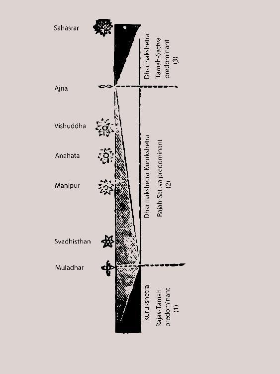

Illustration 3
In the battlefield of sadhana, after the prana-current is made subtle and still via the practice of the “kriya of prana with the six chakras” (pranayam), how the mind sits at the Ajna and then, peacefully, ascends in particular steps/progression to the Non-doing, the Supreme Destination – that is written in the Upanishads. As:
“indriyebhyah parahyarthA arthebhashcha param manah
manasastu parA buddhi burdherAtmA mahAn parah
mahatah paramavyaktamavyaktAt purusho parah
purushAnna param kinchit sA kAshthA sA parAgati”
[Beyond the senses are the “artha” [“tanmatras” or the subtle sources of the evident senses]. Beyond the “artha” is the mind. Beyond the mind is the intelligence. Beyond the intelligence is the soul. Beyond the soul is the Mahat-tattva [original creative principle].
Beyond the Mahat-tattva is the Avyakta [Unmanifested]. Beyond the Avyakta is the Purusha [Supreme Person]. Nothing is higher than the Purusha. He is the Highest. He is the supreme Destination.]
See Illustration no. 4. When, via pranayam, one goes beyond the senses, “artha” - meaning: the subtle “tanmatra[s]” or the internal operators [sources of the evident senses] are revealed. After this time, the coverings of mind [manas]-intellect-ego-chitta begin to progressively disappear, and in every one of the coverings, the Ineffable Active Power of that All-pervading, One without a second, Source of all powers is seen in Its various types of operations. (See the commentaries in Chapter 4, slokas 5 and 7 [of the Bhagavad Gita].)